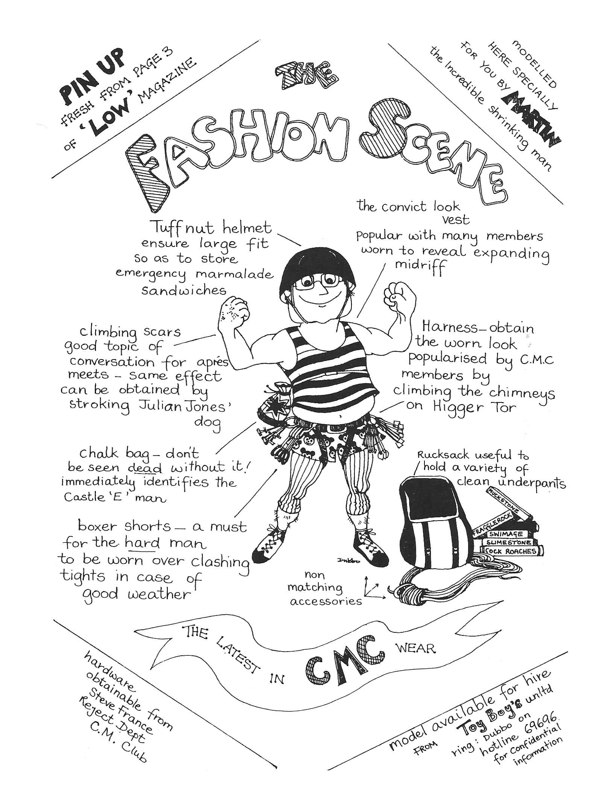

Table of Contents
May Day Meet
<p> <em>by Martin Whitaker</em> </p>
“Esoteric” may well describe some of the rock climbs in the Central Wales Dolgellau area and the selection that the weather permitted us to savour over the May Day Bank Holiday ranged from the sublime Will o’ the Wisp to the ridiculous Gorilla’s Armpit but more of that later.
Frank and Jennifer Mellor went down on Friday morning and were so amazed to find the sun shining in Wales that they felt they had to bag Will o’ the Wisp Hard V Diff the “Classic Rock” route while they could. They had the crag to themselves! Marian Birkett, Chris Wright and I met them in The Cross Foxes that evening and Charles Knowles and John turned up soon after.
Saturday morning had us somewhat aghast sunshine and puffy white clouds. The setting of the campsite at Cwmrhyddfor in these conditions seemed idyllic. Ian Lauriston and Steve Hartland turned up while we were breakfasting, followed shortly by Hilary, Rosy and Andy. The vote went overwhelmingly for Will o’ the Wisp with Frank and Jennifer opting for a day on Cader Idris.
Round in Cwm Cywarch there were some tense moments as the teams battled to be first on Will o’ the Wisp . It seemed that the Whitaker Birkett Wright team would win, having set off first from the campsite, but stunning views up the Cywarch valley had caused a halt at the roadside for photography and as a result the Lauriston Hartland team arrived at the parking spot only a short while after them and raced off towards the crag whilst I was looking for my boots. However, in the end Ian must have lost his competitive concentration and I was able to sneak up the first pitch trailing the ropes while Marian was still putting on her EBs. As it happened there was no queueing and Chris soloed along quite happily behind us. With the arrival of Charles, John, Hilary, Andy and Rosy there was not a single pitch of Will o’ the Wisp which was not being climbed on by the CMC at the same time as the first team arrived back at the sacks, the last one was just leaving the ground! The route was accomplished without fuss by all members and we won’t mention the top rope that Charles had on the “rib” pitch. Oops, sorry Charles!
After that Steve and Chris turned to the harder stuff before being rained off on Acheron. Marian, Ian and I went off in search of Gem Hard Severe performing a sheep rescue en route. This route was made most memorable by the two seconds indulging in a whimpering contest and comparing notes on every stance about why they felt they should retire from climbing. The crux pitch brought the whimpering to a crescendo but nobody actually fell off, thanks to the “talking upwards” performed by those holding the ropes above. However, my suggestion that we should follow this with VS the girdle traverse of Tap Rhygan Ddu was greeted with a show of apathy that bordered on the brink of flat refusal, so I abandoned the project. Competition then became quite fierce as to which one would not do another route with me. My suggestion of a VS had left me with no one to climb with, so I compromised with a Hard V Diff. Suddenly, they both didn’t mind climbing again, so we raced off up to Jack of Diamonds .
We arrived at the start just ahead of Andy and Rosy, who had been climbing Incapability Mod just ahead of Charles, John and Hilary. It was now looking as if it were about to rain, so Ian dropped out and Marian and I set off. Halfway up the second pitch the downpour started and the CMC were soon in full flight, abseiling from everything in sight. Except, that is, for Marian and I, somewhat more committed and for whom getting off seemed as much of a problem as carrying on so we carried on. As it turned out, the deluge was only a passing torrent and it stopped soon after we had reached our sacks.
Back at the campsite, the field had become a sea of mud and I was rather surprised to find the car’s back end overtaking me as I swung up the hill to the tent. I never did get the car back up that hill! Our chosen pub was chiefly memorable for its awful beer we’ll remember not to go there again.
During the night the rain set in and the next morning there was a marked absence of enthusiasm to leave the pit. As I expected, the “mountaineers” Andy, John, Hilary, Rosy and Charles set off up Cader Idris leaving the crag rats and Frank and Jennifer to elect for “a day at the seaside”. We rendezvoused in Towyn at lunch time, a good enough excuse for a visit to the chippie rather interesting pasties and bright green peas! For the afternoon’s entertainment we relied on Marian’s age and experience: from the depths of ancient history, almost before time began, she remembered going on a rock climbing course when she’d been taken to a small training crag on a beach, somewhere near Towyn. So we set off for crag X and with remarkable speed and accuracy, were soon at the foot of a small but fine little sea cliff with clean solid rock albeit a little wet and lots of excellent little lines and problems. There was even a climbing course of young lads and lasses in residence to provide further entertainment. Soon everyone was engrossed in leading, seconding, top roping or soloing, enjoying themselves so much that the weather gave up in disgust and the rock dried out. By about five o’clock most of the obvious lines and some of the climbers were exhausted.
Steve and Ian headed back to Sheffield, but the rest decided to sneak a route on Bird Rock whilst the weather wasn’t looking. Frank and Jennifer climbed The Buttress V Diff and Marian and I went for an amazingly steep route called The Jug Severe . Whilst this was in progress the mountaineers turned up, having had a good day on Cader. The pub at Abergynolwyn was a great success more friends of Marian’s arrived to swell the numbers and a good long evening’s boozing was enjoyed by all.
It rained most of Sunday night but had the decency to stop when it was time to get up, breakfast and pack. The mountaineers went off to sample Marian’s sea cliffs, Frank and Jennifer went for a bike ride and we headed for Bird Rock again. This crag has a propensity for excessive steepness disconcerting until you discover that it has a fair number of large, juggy holds on it. Unfortunately, a high percentage of these seem to be inadequately secured to the rock face and one at least is secured no longer, having parted company when I was clutching it, with the inevitable effect of causing me to execute a swift flight through space before a friendly Moac helped me to resist gravity’s summons. Unfortunately, my other hand had been stuffed up a particularly sharp crack when I was betrayed by this hold and as a result I finished the route using blood for aid it gives better adhesion than chalk! I fell off the most solid pitch of an HVS called Gorilla’s Armpit even the name is enough to put you off! Ollie’s pitch was a real frightener, swinging across on massive, apparently unsupported, blocks. I was glad to make it the last route of the holiday.
Meanwhile Chris and Dave attacked The Bolero HVS and Spike Wally VS and Lisa, Pippa and Marian formed a Cordee Feminine for The Diagonal Severe and Siesta Severe . A good time was had by all and by all accounts we had better weather in Wales than was to be had in the Peak can you believe that?

Figure 1: May Day Meet

Figure 2: The Hard Women

Figure 3: Julian Jones on Acheron Cwm Cywarch

Figure 4: Steve Hartland on Sirplum Cheedale

Figure 5: Everest